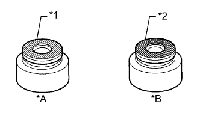
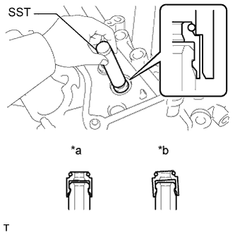
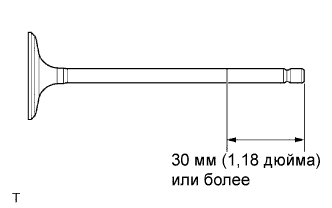
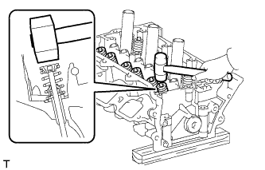
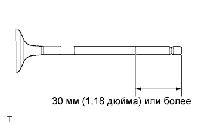
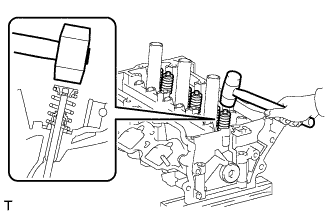

ГОЛОВКА БЛОКА ЦИЛИНДРОВ > ПОВТОРНАЯ СБОРКА |
| 1. УСТАНОВИТЕ РЕЗЬБОВУЮ ШПИЛЬКУ |
С помощью торцовых ключей "TORX" Е6 и Е8 вверните резьбовые шпильки.
| *A | Справа со стороны впуска | *B | Слева со стороны впуска |
| *C | Справа со стороны выпуска | *D | Слева со стороны выпуска |
| *E | Справа с задней стороны | *F | Слева с задней стороны |
| 2. УСТАНОВИТЕ РЕЗЬБОВУЮ ЗАГЛУШКУ № 2 |
С помощью шестигранного гаечного ключа на 14 мм установите 2 новые прокладки и вверните 2 резьбовые заглушки № 2.
| 3. УСТАНОВИТЕ РЕЗЬБОВУЮ ЗАГЛУШКУ № 1 |
С помощью шестигранного гаечного ключа на 10 мм установите 4 новых прокладок и вверните 4 резьбовых заглушек № 1.
| 4. УСТАНОВИТЕ ЧАШКУ ПРУЖИНЫ КЛАПАНА |
Установите чашки клапанных пружин на головку блока цилиндров.
| 5. УСТАНОВИТЕ САЛЬНИК ШТОКА КЛАПАНА |
|  |
Нанесите на новые сальники штока клапана тонкий слой моторного масла.
| *A | Со стороны впуска |
| *B | Со стороны выпуска |
| *1 | Серый |
| *2 | Черный |
|  |
С помощью SST установите сальники.
| *a | ПРАВИЛЬНО |
| *b | НЕПРАВИЛЬНО |
| 6. УСТАНОВИТЕ ВПУСКНОЙ КЛАПАН |
|  |
Нанесите достаточное количество моторного масла на кромку впускного клапана, как показано на рисунке.
Установите впускной клапан, внутреннюю пружину сжатия и тарелку пружины клапана на головку блока цилиндров.
С помощью специального инструмента сожмите внутреннюю пружину и установите 2 кулачка тарелки клапанной пружины.
|  |
С помощью пластмассового молотка слегка осадите торец штока клапана, чтобы обеспечить его надлежащую посадку.
| 7. УСТАНОВИТЕ ВЫПУСКНОЙ КЛАПАН |
|  |
Нанесите достаточное количество моторного масла на кромку выпускного клапана, как показано на рисунке.
Установите выпускной клапан, внутреннюю пружину сжатия и тарелку пружины клапана на головку блока цилиндров.
С помощью специального инструмента сожмите внутреннюю пружину и установите 2 кулачка тарелки клапанной пружины.
|  |
С помощью пластмассового молотка слегка осадите торец штока клапана, чтобы обеспечить его надлежащую посадку.